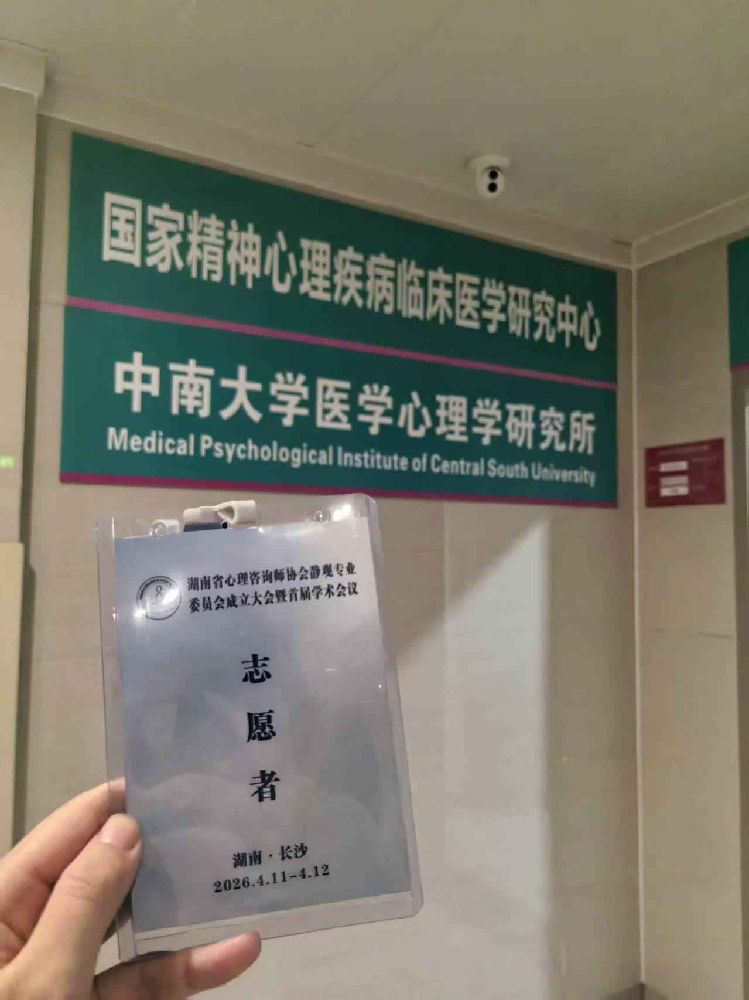
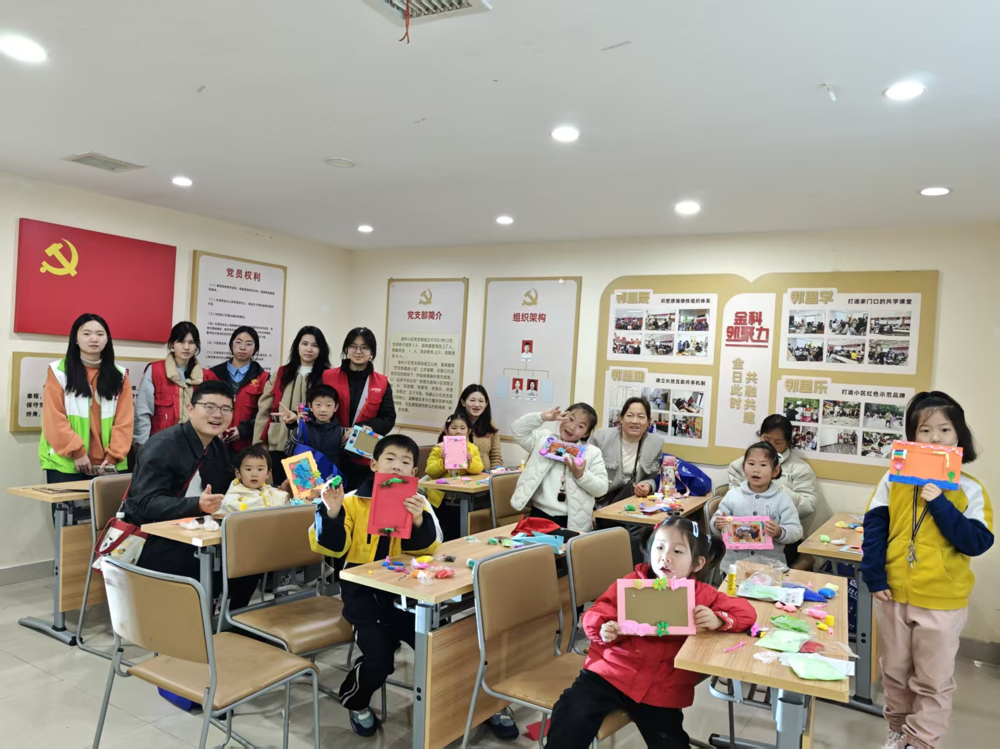
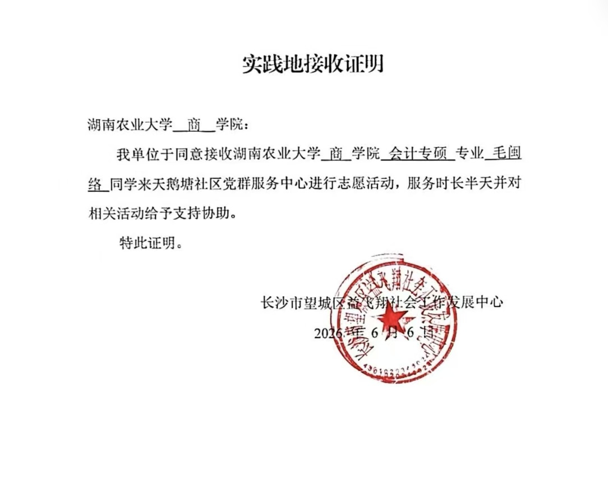

01 / 03STEP INTO SERVICE
先走近，
再理解。
志愿服务让我走进具体的人和具体的需要。真正的关注，不只是看见问题，也愿意花时间靠近现场。


01 / 03STEP INTO SERVICE
志愿服务让我走进具体的人和具体的需要。真正的关注，不只是看见问题，也愿意花时间靠近现场。

02 / 03MAKE ROOM FOR OTHERS
服务不是替别人做决定，而是创造被支持、被表达和被看见的空间，在协作中完成一件具体的事。

03 / 03FOLLOW THROUGH
行动的价值也在于持续回应。把一次服务变成可以被确认的经历，让责任感从当下延伸到之后。
A FEW NOTES
对真实的需要作出回应。
和不同的人一起完成具体的事。
让支持发生在细节和持续里。